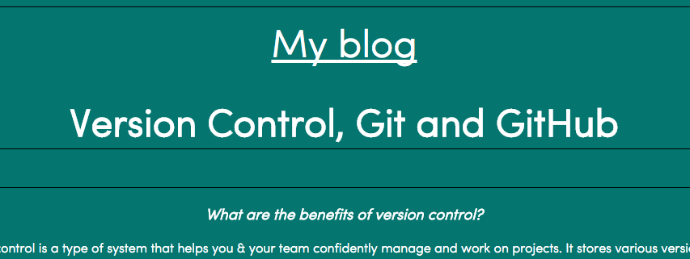

Margins, Borders, and Padding
What is the difference between margins, borders, and padding?
To start, it’s important to understand that CSS treats every HTML element as if it’s located in its own box. This treatment lets us control the dimensions of our elements (in our “box”), create borders around them, adjust spacing, and ultimately control the appearance and readability of our web-pages!
By default, our boxes are sized to perfectly hold the contents inside of it – no more, no less. For example, if you create a paragraph in HTML, and then jump over to a stylesheet to style it, an easy way to see this box’s dimensions is by giving the a background color. This will then highlight exactly the dimensions that your box is consuming, and you can adjust the size from there (and remove the color if you’d like). Here’s a visual that can give some context. The words “My Blog” and “Version Congrol, Git and GitHub” are all in the same element, therefore the same box, & are taking up the space that the black background color shows.
Before we get to the difference between Margin & Padding, I’d like to explain what a Border is. You can give your boxes visible borders, and giving a black border around our element shown above would look like this:
So, borders give us a visual outline of where the edges of our boxes (elements) are on the page. Giving borders to elements is common among designers, but we want to make sure we don’t have boxes stacked on top of each other, which would be difficult to read.
We do this by adjusting our whitespace through our Margins. Adjusting a margin adjusts the area outside of the element’s border (remember Borders above?). This can be used to give some more space & nice visual gaps between different elements. Margins do not have colors, and are therefore transparent space on a page. You can manipulate margins on the top, left, bottom, and right sides of an element, and choose anywhere from none to all sides to style.
An example of two elements next to each other with borders & whitespace between them is here:
Next, Padding is the space between the border of our element, and the content contained inside that element. Whereas margins help you space out various elements on a page, padding helps you space out content inside those elements. As in Margins, you can adjust Padding on none, any or all sides.
Here’s a visual of adding more Padding to our Bordered element, previously seen above. See how we have more empty space between the black border & “My Blog”?
As you can see, borders, margin and padding all go together in styling but are very different! All in all, starting inward at an element and moving outward, we can control (1) Padding, (2) Border, and (3) Margin.